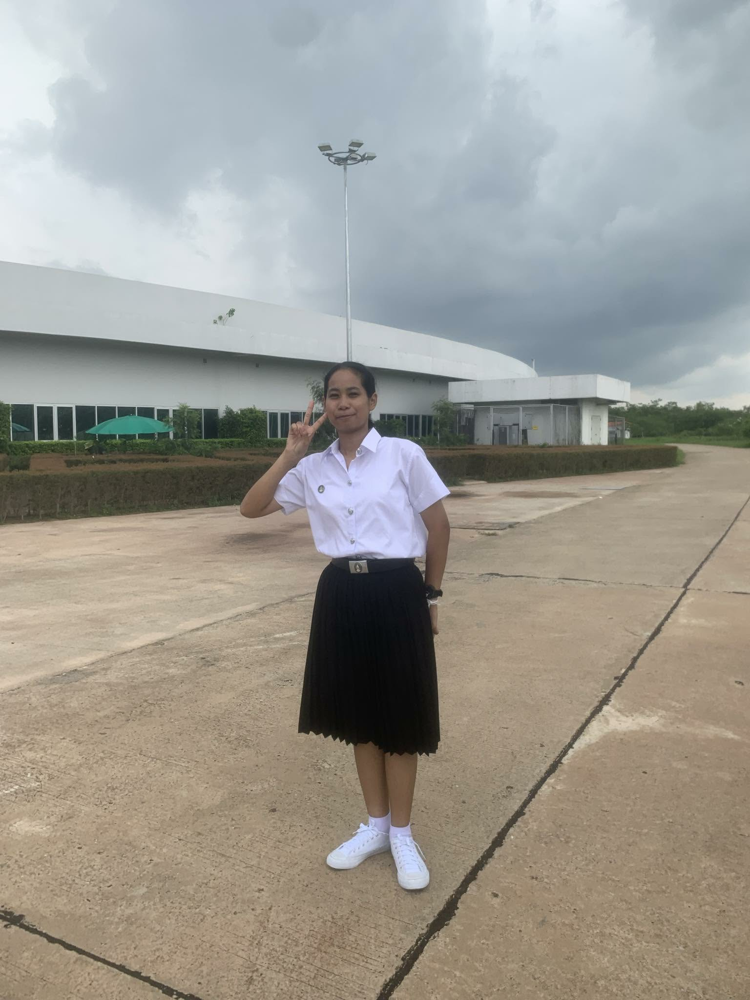
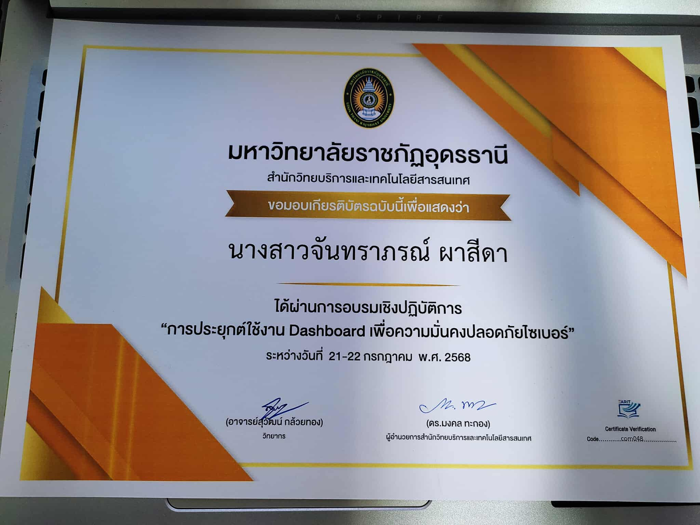
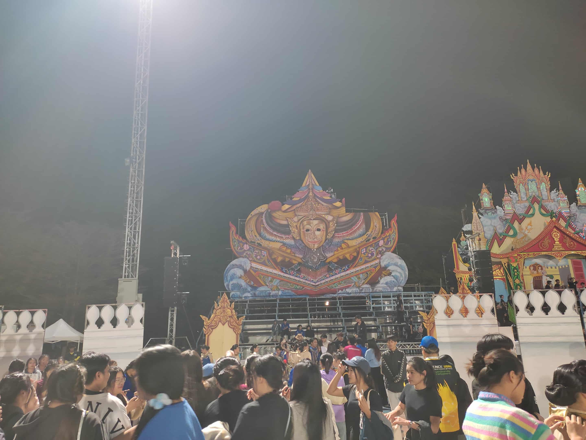
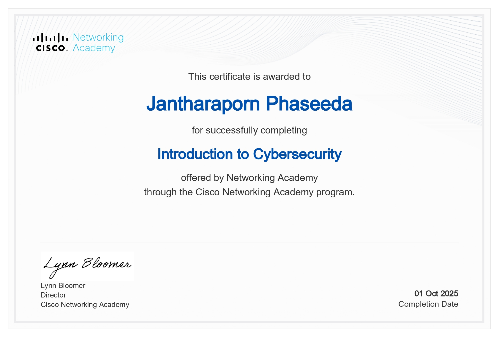

Profile
Portfolio & Introduction
1. แนะนำตัว (Introduction / Profile)

- ชื่อ–นามสกุล
- จันทราภรณ์ ผาสีดา (Jantharaporn Phaseeda)
- ชื่อเล่น
- แพรว (Pawe)
- มหาวิทยาลัย
- ราชภัฏอุดรธานี
- คณะ
- วิทยาศาสตร์
- สาขา
- เทคโนโลยีสารสนเทศ (Information Technology)
- ชั้นปี
- ชั้นปีที่ 3
- ความสนใจ
- AI, Web Dev, Cybersecurity
2. ทักษะ (Skills)
- Programming
- AI & Data
- Tools
- Soft Skills
3. ผลงานที่ผ่านมา (Projects / Portfolio)


4. ประวัติการศึกษา (Education)
- 2560–2563
- โรงเรียนมารีย์พิทักษ์เซกา
- 2564–2566
- โรงเรียนมัธยมเซกา
- ปัจจุบัน
- คณะวิทยาศาสตร์ สาขาเทคโนโลยีสารสนเทศ
มหาวิทยาลัยราชภัฏอุดรธานี
5. กิจกรรมและผลงานอื่น ๆ (Activities / Achievements)
ผู้เข้าร่วมการอบรม “การประยุกต์การใช้งาน Dashboard เพื่อความมั่นคงปลอดภัย”

เข้าร่วมแข่งขันแสตนเชียร์ กีฬาวังแดงเกมส์ ครั้งที่ 34

Certificate: Introduction to Cybersecurity

6. ติดต่อ (Contact)
- 67040233119@udru.ac.th
- 🌐 GitHub
- github.com/Jantharaporn-05
- jantharaporn.phaseeda
- 🏠 จังหวัด
- 238 หมู่ 10 อำเภอเซกา จังหวัดบึงกาฬ
7. เป้าหมายในอนาคต และ Career Interest
- เป้าหมาย
- Web Developer หรือ AI Engineer
- ความสนใจ
- สนใจการเขียนโปรแกรมภาษา Java อยากเรียนรู้ให้เข้าใจมากยิ่งขึ้นเพื่อใช้ทำงานในอนาคต